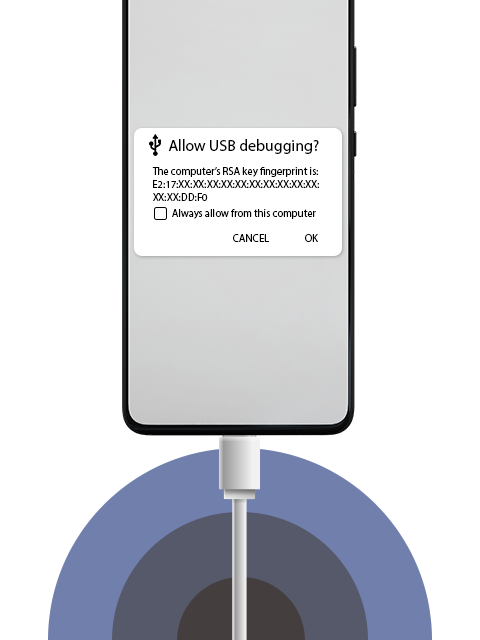

Allow ADB
Steps to allow
Enable developer options in you phone.
Search on internet "How to enable developer options" as per your phone's model.
Go to Developer options and enable USB debugging.
On Allow USB debugging? popup, tick Always allow from this computer, then click on OK.
Voila! Your device setup is completed.
Common Issues
System's USB port version not supported.
Ports are connected loosely at either ends of the cable.
No proper drivers install for USB.